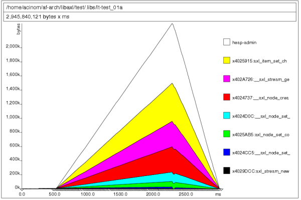
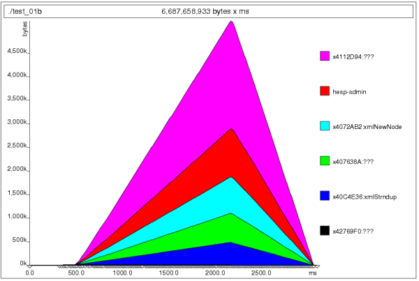

Axl memory usage report for 0.2.6 release
Axl memory usage report for 0.2.6 release
1. Introduction
The following information was gathered through several modifications performed to the LibAxl library, using a machine with a Intel(R) Pentium(R) 4. This report covers the memory profile that the library has and compares that result with the LibXML library.
In also contains a brief about improvements done to the library to reduce execution time, while supporting the same features.
It is in no way a complete library comparison at all, but provides some useful information about the motivations for building LibAxl library and how basic features compares to LibXML.
The implementation reference chosen was LibXML-2.0 (version 2.6.26) mainly because it was used by Af-Arch and Vortex Library.
To produce the memory profiling results used on this report it was used the valgrind tool and its extension to profile heap allocation and memory performance, called massif. It was also used callgrind tool which gives statistical performance information.
The test used for this memory usage report was the following for the case of Axl library results:
#include#include int main (int argc, char ** argv) { axlError ** error; /* top level definitions */ axlDoc * doc = NULL; /* initialize axl library */ if (! axl_init ()) { printf ("Unable to initialize Axl library\n"); return -1; } /* get current doc reference */ doc = axl_doc_parse_from_file ("large.xml", error); if (doc == NULL) return AXL_FALSE; /* cleanup axl library */ axl_end (); /* release the document */ axl_doc_free (doc); return AXL_TRUE; }
For the performance results get for the LibXML-2.0 library, the test code was:
#include#include int main (int argc, char ** argv) { xmlDocPtr doc; /* init libXml */ LIBXML_TEST_VERSION /* load the document */ doc = xmlParseFile ("large.xml"); if (doc == NULL) { printf ("Failed to load the xml document.\n"); return -1; } /* release memory */ xmlFreeDoc (doc); xmlCleanupParser(); return 0; }
The xml file used is a glade file definition that is 650K sized approx.
Test was run using the following command to get memory usage:
bash: ~$ valgrind --leak-check --show-reachable=yes ./test_file
The following command was used to get the memory profiling information for both libraries.
bash: ~$ valgrind --tool=massif ./test_file
Conventions used on this report to identify memory allocations, memory deallocations and total amount of memory used are the following:
(A) = allocations (F) = deallocations (T) = total amount (bytes)
2. Initial status
Last report done, for Axl Library 0.2.1, shows the following data as initial status for memory consumption and runtime performance.
MEMORY CONSUMED BY AXL 0.2.1: LibAxl: (A) 139088 (F) 139088 (T) 1937471 LibXML: (A) 127809 (F) 127809 (T) 4201579
RUNTIME PERFORMANCE BY AXL 0.2.1: test_01a (axl): 0.106ms test_01b (xml): 0.047ms
3. Improve operations performed
An adaptative approach has been implemented to hold xml node attributes using a simple linked list which shows a good performance while it is memory efficient, and a hash table when those attributes gets bigger than 10 attributes.
This modification was applied knowing that using a hash table to handle attributes indexed by string keys is the best approach because it offers good performance. However to be able take advantage of using a hash table, many attributes must be stored.
In the other hand, using a simple linked list to hold attributes while they are a small set (less or equal to 10 elements) shows that it is faster and more memory efficient than using a hash table for such situations.
The explanation is quite simple. Using a hash which implements key collisions using Chaining, that has been showed to be the better approach, makes to to resolve the hashing function plus iterate over a list of elements which contains all clashed elements (Chaining) with same hash value.
At the end, replacing a simple linked list with a hash for all situations, have showed that it offers poor performance (because users usually doesn't store 100 xml attributes for a particular node) and poor memory usage (keep running a hash table is cost expensive than a simple linked list).
Results compared to previous values shows that this is a better approach.
RUNTIME PERFORMANCE BY AXL 0.2.5: test_01a (axl): 0.076ms test_01b (xml): 0.050ms
4. Memory consumption
Due to use a simple linked list for situations where few attributes are used, shows that the library has a better memory usage:
MEMORY CONSUMED BY AXL 0.2.6: LibAxl: (A) 106,208 (F) 106,208 (T) 1,513,687 LibXML: (A) 127,811 (F) 127,811 (T) 4,201,777
Here is the memory profile (produced with massif) for the LibXML library:
And the memory profile for the Axl Library:
 4. Conclusion
Again, this new Axl Library release is faster and more memory efficient than previous, while all features keep the same (and new ones are added).
Memory usage have been moved from 1,890,427 bytes to 1,513,687 bytes and performance execution from 0.83ms to 0.77ms.
LibXML is still faster, but consumes far more memory than Axl Library. Memory profiling still shows that Axl Library performs several little allocations, making the heap admin to be bigger than the produced by LibXML.
However, at this point, it is possible to conclude that under heavy memory pressure LibAxl will behave better as it requires fewer memory to hold the same xml document structure. This has a clear impact while developing xml applications where suffering swapping is a big problem (part of the memory holding the program is sent to the swap memory because memory load).
5. References
- Valgrind Homepage for this profiling tool and its extensions.
- LibXML LibXML homepage, tutorials, references and manuals.